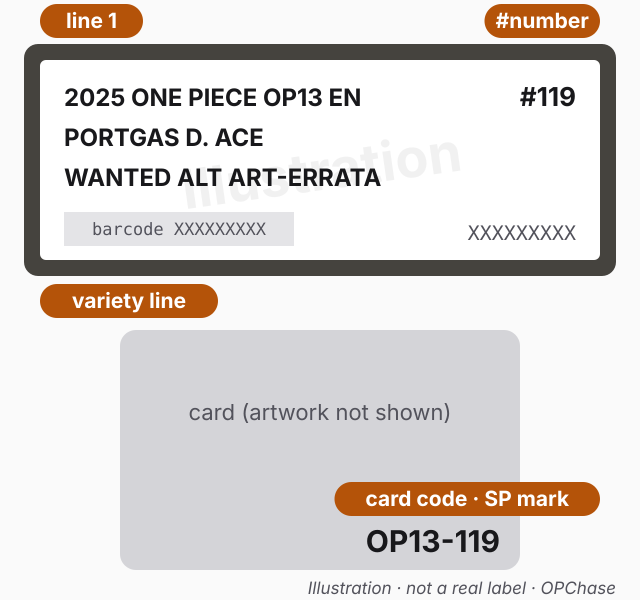
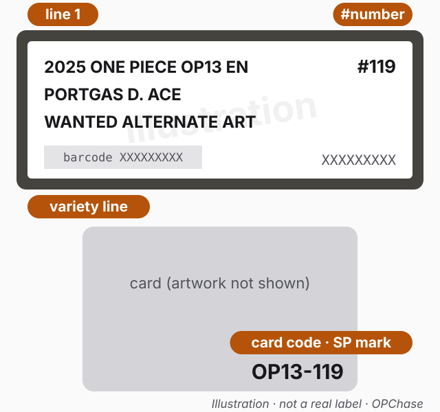

Guide · PSA labels
OP13-119 Ace Wanted Poster: misprint or corrected? What to read on the card and the PSA label
On the three slabs we cite, WANTED ALT ART-ERRATA held Bandai's corrected text and plain WANTED ALTERNATE ART held the misprint. Read the [On Play] text, the variety line and the code on the card.
What Bandai says
- The notice. On October 30, 2025, Bandai's English site said there are misprints in a card's text in the OP-13 booster pack (CARRYING ON HIS WILL) and that "the following revision shall be treated as correct". The card is Portgas.D.Ace (Wanted Poster Design). Bandai adds: "Only the Wanted Poster Version of this card is affected." notice
- The two texts. Bandai lists a Before and an After for the [On Play] effect notice:
- Before (misprint): "[On Play] If your Leader is multicolored, set up to 4 of your DON!! cards as active. Then, you cannot play Character cards with a base cost of 5 or more during this turn."
- After (corrected): "[On Play] Give up to 1 rested DON!! card to your Leader. Then, you may return up to 1 of your opponent's Characters with a cost of 5 or less to the owner's hand. If you do, your opponent plays up to 1 Character card with a cost of 4 or less from their hand."
- The card list. Bandai's official English card list shows the OP13-119 entry marked SP CARD with the After text and the note "Errata Card" card list. The cards in the three slabs we cite carry the SP mark next to OP13-119.
- The exchange. On November 7, 2025, Bandai announced that it will exchange the erroneous Wanted Poster version for a corrected card, by post exchange. For North America, Europe and Oceania, the page lists two dates (as read on 2026-10-18; check the page before you act):
- Application Period: until October 31, 2026. This is the last day to apply through the form linked for your region.
- Deadline for Shipping Card to the Designated Address: November 30, 2026. This is the last day to send the card itself to your region's exchange contact.
- For Hong Kong, Taiwan, Singapore, Malaysia, Indonesia, the Philippines and Thailand, the page says details will be announced later. In Latin America, exchanges are handled in person at designated events.
- Bandai says each returned card is inspected by the regional exchange office, which decides whether it can be replaced. OPChase does not run exchanges; follow Bandai's page.
The slabs we cite
We read the card text on each slab and compared it with Bandai's two texts. On the two WANTED ALT ART-ERRATA slabs, the card text we read is word for word Bandai's After text. On the WANTED ALTERNATE ART slab, it is word for word Bandai's Before text PSAnotice.
| Cert | Label (as printed) | Variety on the cert page | [On Play] text we read on the card | Matches |
|---|---|---|---|---|
| 156180410 | 2025 ONE PIECE OP13 EN / PORTGAS D. ACE / WANTED ALT ART-ERRATA / #119 | WANTED ALT ART-ERRATA | "Give up to 1 rested DON!! card to your Leader. Then, you may return up to 1 of your opponent's Characters with a cost of 5 or less to the owner's hand. If you do, your opponent plays up to 1 Character card with a cost of 4 or less from their hand." | Bandai's After text |
| 165461214 | 2025 ONE PIECE OP13 EN / PORTGAS D. ACE / WANTED ALT ART-ERRATA / #119 | WANTED ALT ART-ERRATA | Same as above | Bandai's After text |
| 161751653 | 2025 ONE PIECE OP13 EN / PORTGAS D. ACE / WANTED ALTERNATE ART / #119 | WANTED ALTERNATE ART | "If your Leader is multicolored, set up to 4 of your DON!! cards as active. Then, you cannot play Character cards with a base cost of 5 or more during this turn." | Bandai's Before text (the misprint) |
- On all three slabs, the card's bottom-right code reads OP13-119 with the SP and SEC marks. The label itself shows only "#119".
- All three cert pages show Brand/Title "ONE PIECE OP13-CARRYING ON HIS WILL", subject PORTGAS D. ACE, card number 119, year 2025 and grade GEM MT 10 PSA.
- The card also carries a line above [On Play], "If you have 3 or less Life cards, this Character gains Rush". It reads the same on all three slabs. The [On Play] effect is the only text difference we saw between them, and it is the effect Bandai's notice is about.
The two labels, close up
Each illustration is drawn from the label text on the public certs we cite (label wording unconfirmed). Orange tags mark "line 1", the "variety line" and the "#number". Below each label is the card code printed on the card itself; card artwork and card text are not shown, so read the [On Play] text on the real card.

No eBay listings box for this one: we have not matched this PSA variety to one version in our listing data.

No eBay listings box for this one: we have not matched this PSA variety to one version in our listing data.
How to tell which one you have
- Check the card number and design. The card must read OP13-119 and have the Wanted Poster design. Bandai says only that version is affected notice. The label alone can't show this, because it prints only "#119" PSA.
- Read the [On Play] text. "Set up to 4 of your DON!! cards as active" is the misprint. "Give up to 1 rested DON!! card to your Leader" is the corrected text.
- Read the variety line to the end. On the slabs we cite, the corrected text was filed as WANTED ALT ART-ERRATA and the misprint as WANTED ALTERNATE ART PSA. A plain WANTED ALTERNATE ART label can hold the misprinted text. Don't assume it doesn't.
- Look the cert up on PSA's site at psacard.com/cert/<number> and compare the character, number, variety and grade with the slab in your hand PSA.
Don't mix up the spelling, or the card
- The Ace says "ALT ART". On the slabs we cite, the corrected Ace is filed as "WANTED ALT ART-ERRATA", not "WANTED ALTERNATE ART-ERRATA". If you search PSA or a listing with the longer spelling, you may miss it PSA.
- Other errata cards can be spelled differently. The wording on one card's label tells you nothing about another card's label. Our guide How to read a One Piece PSA label explains the variety line in general.
- "#119" is not always this Ace. The label prints only the digits, and other cards also carry 119 in their number. Read the character name on the label and the code on the card. Our guide Luffy "#119" PSA slabs shows how that plays out for Luffy.
Method and limits
- Sources (public certs, label wording unconfirmed):
- Label and card-text readings come from the front photos of the slabs on PSA's cert pages (psacard.com/cert/<number>) and the fields on those pages. We read the label and card text in each slab photo ourselves, most recently on 2026-10-18 (public certs, label wording unconfirmed).
- All three cert pages were read again on 2026-10-18.
- We compared the card text with Bandai's notice notice and Bandai's official English card list card list, both read on 2026-10-18.
- Exchange dates come from Bandai's page exchange, read on 2026-10-18.
- All cited certs are publicly viewable. None belongs to OPChase.
- What this guide is not: it is not a grading guide, and it does not tell you whether a slab or card is genuine; check the cert on PSA's site. It does not cover grading counts or market values.
- Known gaps:
- We cite three slabs (public certs, label wording unconfirmed). We have not checked every slab filed under either variety, so we do not claim that every WANTED ALTERNATE ART slab has the misprint or that every WANTED ALT ART-ERRATA slab has the corrected text. Read the card text.
- We do not know how PSA decides which variety a given card goes under.
- We did not check other versions of OP13-119 Ace slabs for this guide; Bandai says they are not affected notice.
- Bandai's exchange page does not mention graded cards. We have not asked Bandai or the exchange offices how they handle them.
- Exchange rules and dates may change. Use Bandai's page, not this guide, to decide.
Where the facts come from
- Bandai's errata notice (Before / After text, "Only the Wanted Poster Version of this card is affected"): en.onepiece-cardgame.com/topics/notice_op13-119.php, dated October 30, 2025 notice.
- Bandai's exchange page (application period and shipping deadline): en.onepiece-cardgame.com/topics/023.php, dated November 7, 2025 exchange.
- Bandai's official English card list (OP-13, OP13-119 SP CARD entry with "Errata Card"): en.onepiece-cardgame.com/cardlist/?series=569113 card list.
- Label fields and printed labels: PSA's cert pages, psacard.com/cert/<number> PSA. Certs cited (public certs, label wording unconfirmed): 156180410, 161751653, 165461214.
Look these cards up
OP13-119 Portgas.D.Ace (all versions) · All Portgas.D.Ace cards
More guides: How to read a PSA label · Luffy #119 PSA slabs · Rarities explained · Card Database
This guide contains no affiliate links and no prices. Label wording comes from PSA's public cert pages; card text quotes and exchange dates come from Bandai's official English site.